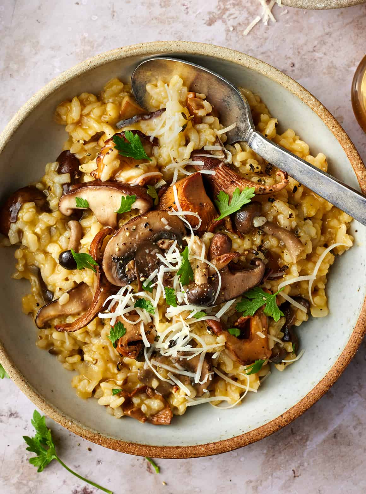

Mushroom Risotto

Description
Mushroom risotto is a creamy, savory Italian dish made with Arborio rice, cooked slowly in broth, and enriched with sautéed mushrooms, garlic, and Parmesan cheese.
Ingredients
- 1 1/2 cups Arborio rice
- 4 cups chicken or vegetable broth
- 2 tablespoons olive Oil
- 1 tablespoon butter
- 1 small onion, finely chopped
- 2 garlic cloves, minced
- 1 pound of mushrooms (such as cremini, button, or a mix), sliced
- 1/2 cup dry white wine (optional)
- 1/2 cup of grated Parmesan cheese
- salt and pepper to taste
- Fresh parsley (for garnish, optional)
Steps
- Prepare the Broth: In a small saucepan, bring the chicken or vegetable broth to a simmer. Keep it warm on low heat.
- the Mushrooms: Heat 1 tablespoon of olive oil in a large pan over medium heat. Add the mushrooms and sauté until softened and browned, about 5-7 minutes. Remove from the pan and set aside.
- Sauté the Onions and Garlic: In the same pan, add 1 tablespoon of olive oil and 1 tablespoon of butter. Add the chopped onion and cook until softened, about 3-4 minutes. Add the minced garlic and cook for another 1 minute, being careful not to burn it.
- Toast the Rice: Add the Arborio rice to the pan with the onions and garlic. Stir for 1-2 minutes until the rice is lightly toasted.
- Deglaze with Wine: If using, pour in the white wine and stir until absorbed by the rice.
- Add the Broth: Begin adding the warm broth, one ladle at a time, to the rice. Stir constantly until most of the liquid is absorbed before adding the next ladle of broth. Continue this process for 18-20 minutes, or until the rice is creamy and cooked al dente.
- Finish the Risotto: Once the rice is cooked, stir in the sautéed mushrooms and Parmesan cheese. Season with salt and pepper to taste.
- Serve: Spoon the risotto into bowls, garnish with fresh parsley (optional), and serve immediately.
This creamy, comforting dish is perfect for any occasion! Enjoy your homemade mushroom risotto!
Home